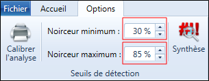
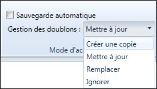
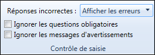

PARAMÉTRAGE AVANCÉ
Calibrer la lecture
L'option calibrer la lecture permet d'effectuer une calibration automatique des options pour avoir la meilleure reconnaissance possible, pour ce faire :
-
Depuis l'onglet Options, cliquez sur le bouton Calibrer la lecture.
-
Cliquez sur le bouton Imprimer (cliquez directement sur le bouton Passer l'impression si vous avez déjà imprimé le formulaire d'étalonnage).

-
Cliquez sur pour sélectionner le formulaire scanné (le formulaire doit être au format : PDF, TIF, PNG ou JPG).
-
Cliquez par la suite sur le bouton Lancer la calibration.
-
Une fois la calibration terminée, cliquez sur le bouton Appliquer les recommandations pour modifier le % des seuils de détection.


Seuils de détection
Pour améliorer la reconnaissance, vous pouvez modifier manuellement les seuils de détection (noirceur minimum et noirceur maximum).

-
Noirceur minimum : Seuil minimal du taux de noirceur utilisé lors de la détection du remplissage d'une case à cocher. en dessous de ce seuil, la case est considérée comme vierge.
-
Noirceur maximum : Seuil maximal du taux de noirceur utilisé lors de la détection du remplissage d'une case à cocher. Au-dessus de ce seuil, la case est perçue comme raturée, donc nulle.
Traitement de l'image
-
Cocher la case Analyser en niveau de gris permet de forcer la conversion de l'image en noir et blanc.
Cette option peut améliorer la qualité de l'analyse, notamment sur des formulaires remplis avec un stylo de couleur. -
Cocher la case Ajouter de la noirceur aux images permet d'ajouter de la noirceur à l'image pendant l'analyse.
Cette option est utile dans le cas où les documents sont trop peu contrastés ou si les cases cochées reconnues avec un très faible pourcentage de noirceur.
Mode d’acquisition
Sauvegarde automatique
Cocher la case sauvegarde automatique permet pour chaque document, d'enregistrer automatiquement l'observation acquise dans l'enquête, si la numérisation ne présente aucune erreur ou aucun avertissement. Elle n’apparaît donc plus dans la liste des observations à valider.
Gestion des doublons
En cas de doublon d'observation détecté lors de l'acquisition (même clé ou même horodatage), vous pouvez choisir comment traiter la donnée.

Sélectionnez l'option à utiliser depuis le menu déroulant Gestion des doublons :
-
Créer une copie : Une nouvelle observation est créée avec le même horodatage ou la même clé.
-
Mettre à jour : L'observation existante est mise à jour avec les nouvelles valeurs acquises.
-
Remplacer : L'observation existante est remplacée par la nouvelle acquise.
-
Ignorer : Aucune action, l'acquisition se poursuit.
Contrôle de saisie
Cette partie vous permet de choisir quel traitement appliquer aux réponses incorrectes et d'ignorer les questions obligatoires ainsi que les messages d'avertissements.

Réponses incorrectes : Lorsque le nombre de réponses est incorrect pour une question fermée, vous pouvez choisir quel traitement appliquer à la question : Afficher l'erreur, mettre la variable à non réponse ou corriger automatiquement.
Archivage
Pour modifier le dossier d'archivage des images scannées, procédez comme suit :
-
Depuis l'onglet Options, cliquez sur Archivage depuis la partie Préférences.
-
Cliquez sur pour changer de dossier.
REMARQUE : Attention, changer le dossier d'archivage alors que des observations ont déjà été enregistrées peut les rendre invisibles dans le tableur.